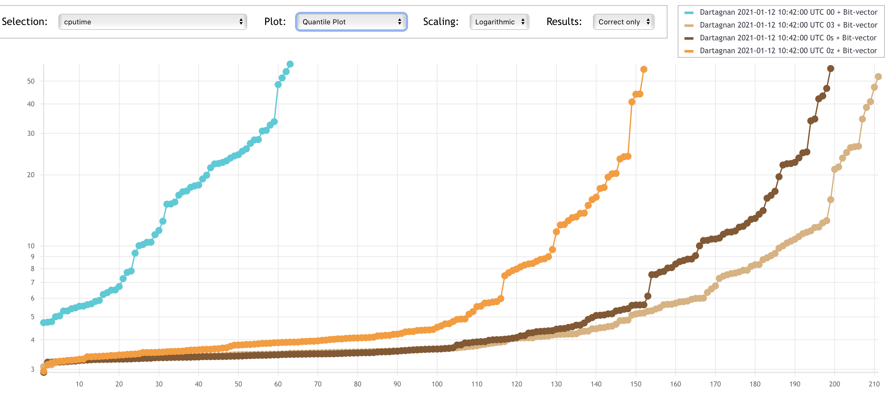
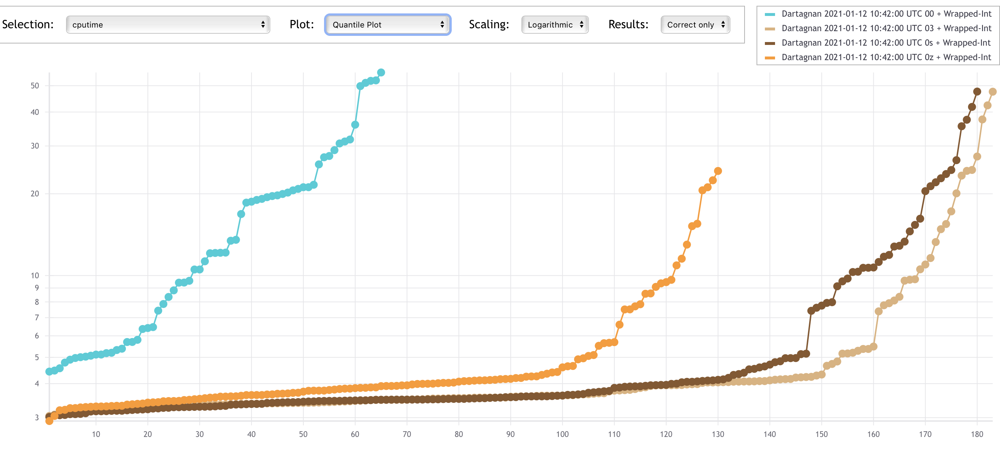
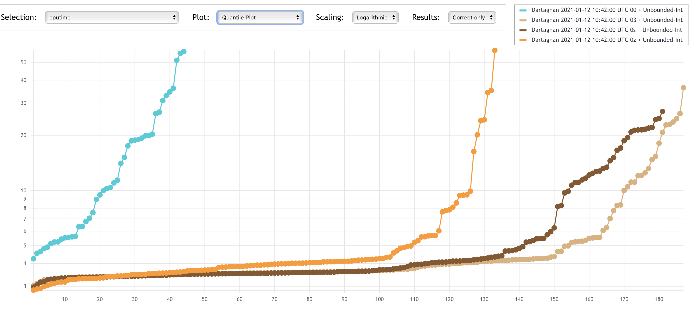
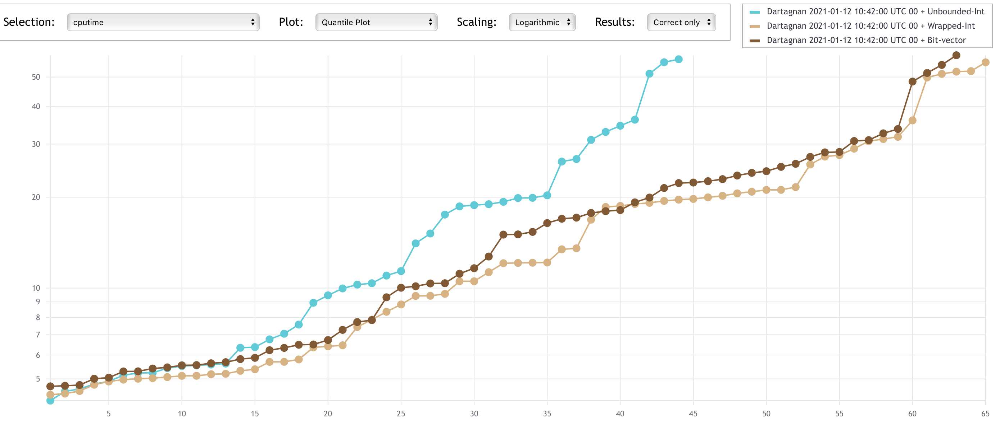
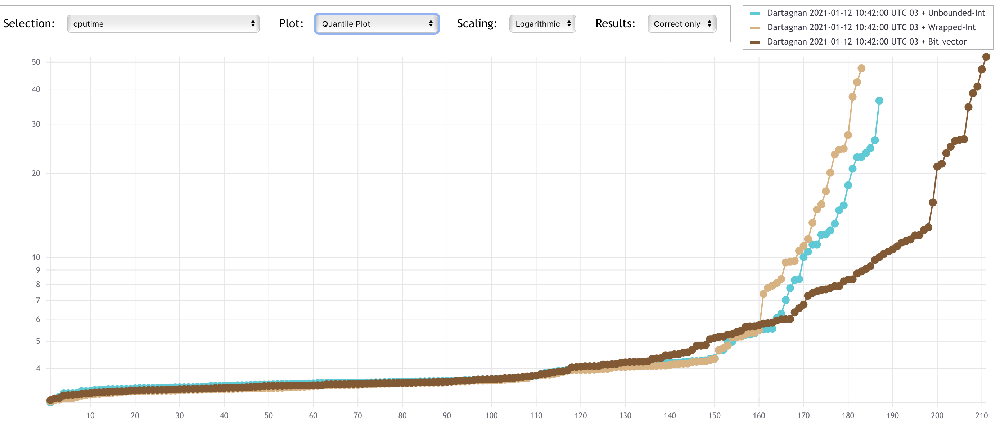

This article explains some of the lessons learned during the last year while preparing Dartagnan, our Bounded Model Checking (BMC) tool, to participate in the 10th Competition on Software Verification (SVCOMP 2021).
The paper summarising these lessons will appear in the proceedings of TACAS 2021.
In SVCOMP 2020 Dartagnan only participated in the reachability category for concurrent programs.
For 2021 we wanted to show that our tool can also efficiently verify sequential programs.
The problem was that many of the verification tasks required many loop iterations (which is a challenge for BMC) to either find a bug or prove the program correct.
This lead me to read some papers about under-approximating loops to find violations easier, or over-approximating them to provide sound results for programs with loops of large or unknown bounds.
When I mentioned these papers to Johannes Kinder, he told me
You can obtain similar results using static analysis techniques. Actually this is what an optimising compiler does in many situations.
Leveraging compiler optimisations
While the performance of techniques like stateless model checking or symbolic execution mostly depends on the number of executions of the program, BMC tools are much more sensitive to the program syntax.
This is because BMC encodes the semantics of the program as a single SMT formula representing all its executions.
The loop structure and the number of program variables directly impact the formula size and thus the solving times.
Our goal was to simplify the structure of the program while preserving its semantics.
Wait a minute, isn't that what a compiler does when it optimises code? Exactly!
Consider the following program which is part of the ReachSafety category of SVCOMP
int main(void) {
unsigned int x = 1;
unsigned int y = 0;
while (y < 1024) {
x = 0;
y++;
}
assert(x == 0);
}
A BMC tool has to unroll the program 1024 times to prove the program correct.
However, since the value of x is constant at every loop iteration, the assignment can be moved outside the loop.
Since the value of y is never read, the instruction y++ can be removed (using dead store elimination) leading to an empty loop which can also be removed.
Finally, using constant propagation, the assertion can be re-written as assert(0 == 0) which is trivially true.
All these optimizations are implemented in most optimising compilers.
Since Dartagnan performs the verification after compiling to LLVM, it gets all these program simplifications for free.
After 15 minutes, Dartagnan reaches a timeout when trying to verify the program above.
However, by just using the -O3 flag when compiling the code to LLVM, the resulting (optimised) program can be verified within seconds.
So far so good, but we all know there ain't no such thing as free lunch.
Using an optimising compiler has its risks.
First of all, most compiler optimisations are unsound for concurrent programs and thus we did not use any during the competition for the concurrency category.
Even for single threaded programs, there is a price to pay.
Some optimisations introduce bitwise operations even when the original program has none.
For example, multiplications tend to be compiled to shift operations.
We thus needed to encode the semantics of such operations precisely.
The price of precision
Many verification tools based on SMT solvers use the theory of integers to represent program variables.
The trade-off between the efficiency of a theory and the precision in modelling semantics is well-known.
This paper explores such trade-off in the context of the KLEE symbolic execution engine.
SMACK, another tool participating in SVCOMP, implements an approach to diagnose spurious counterexamples caused by such approximations and gradually refines the precision.
To guarantee soundness when using compiler optimisations, we implemented two precise SMT encodings for integers.
The first is based on the theory of bit-vectors, where we get bit-precise reasoning for free from the theory.
The second is based on the theory of integers, and we do an on-demand conversion.
When we encounter a bitwise operation, we convert integers to bit-vectors, apply the operation and convert the result back to an integer.
Experiments
This is an extended version of the evaluation we performed before our participation in SVCOMP 2021.
We did not only tried several compiler optimisations (-O0, -O3, -Os, -Oz), but also different program transformations and integers encoding.
As mentioned above, one encoding models integers as bit-vectors.
As we rely on SMACK to convert C files to Boogie and there is a potential problem with unsigned integer comparisons in such conversion, SMACK provides two different transformation modes.
One transformation is sound but it requires wrapping comparisons using modulo operations and thus the generated SMT encoding is probably slow.
The encoding of the other transformation is supposed to be fast, but it might be unsound.
For the evaluation we used the bit-vector encoding and the same integer-encoding for both transformation modes.
The plots below show that using compiler optimisations clearly helps Dartagnan.
The x-axes represent solved tasks and the y-axes CPU time.
Despite the used encoding, it can be seen that the number of solved tasks is quite low when -O0 is used (below 70).
The -O3 option seem to be the best one, closely followed by -Os.
This is due to the simplifications made by the compiler optimisations as described in the example above.
In general, using optimisations we are able to solve 3x more benchmarks.



Let's take a look to how the different encodings impact performance.
The results on the first plot (using -O0) are somehow surprising.
It is kind of folklore in the verification community that the theory of integers has better performance than the theory of big-vectors.
However we obtained the worst results using unbounded integers (UI), i.e. the SMACK transformation without wrapping comparisons + the SMT encoding using the theory of integers.
The reason why the bit-vector encoding (BV) performs better is that many benchmarks use bitwise operations and thus the integer encoding converts the operands to bit-vectors, performs the operation and convert the result back to integers.
This is required to guarantee soundness, but experiments suggests that converting between theories is very expensive.
We expected UI to be the fastest of both integer encodings, however we were surprised that wrapped integers (WI), which requires many modulo operations, performed better than UI.
So far we do not have an answer of why this is the case.

When compiled using -O3, the UI encoding was faster than WI as one would expect.
However, due to ithe unsoundness of the transformation, this generates many wrong results.
Since wrong results gives negative points in SVCOMP, if we compared the obtained points, WI achieves better results than UI.
At this optimisation level, BV was a clear winner both on solving times (again because pure bit-vectors are faster than switching between theories) and correctness of results.
Therefore, for SVCOMP 2021 we chose the -03 optimisation with the bit-vectors encoding.

Conclusion
Something that is quite clear from the plots above is that using compiler optimisations helps software verification.
Here we just evaluated a BMC tool, but KLEE also uses some hand-picked optimisations before starting the exploration.
Which SMT encoding to use depends on the presence of bitwise operations on the program.
However, remember that even if they are not present in the original C file, they can be introduced by the compiler optimisations.